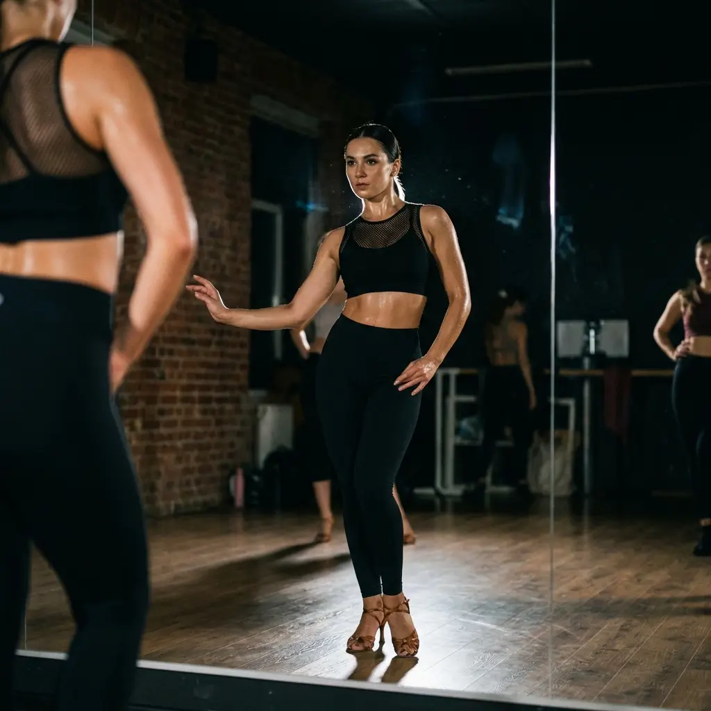

Viele Schüler kommen zu uns und suchen speziell nach Bachata-Kursen. Was sie jedoch entdecken, ist eine umfassende Latin Dance School, die viel mehr bietet. Um die Kunst der Bewegung wirklich zu meistern, glauben wir, dass ein Tänzer das gesamte Spektrum lateinamerikanischer Rhythmen erkunden muss.
Bei AXcent Dance in Zürich ist unser Lehrplan darauf ausgelegt, vielseitige und selbstbewusste Tänzer zu schaffen. Wir unterrichten nicht nur Schritte; wir vermitteln Musik, Kultur und Verbindung über mehrere Disziplinen hinweg. Erfahre mehr darüber, was Bachata ist und warum es besonders ist.
Mehr als nur Bachata
Salsa
Der Herzschlag des Latin Dance. Salsa zu lernen verbessert dein Timing, deine Geschwindigkeit und deine Drehtechnik, was direkt deinen Bachata-Flow bereichert.
Merengue
Der Ursprung von allem. Merengue lehrt dich Hüftbewegung (cuban motion) und Gewichtsverlagerung wie kein anderer Tanz.
ChaCha
Präzision und Verspieltheit. ChaCha fordert deinen Rhythmus und deine Beinarbeit heraus und verleiht deinem Stil mehr Schärfe.
Styling & Body Movement
Es geht nicht nur darum, was du tust, sondern wie du es tust. Unsere Styling-Klassen konzentrieren sich auf Armlinien, Isolation und Ausdruck.
Warum eine ganzheitliche Latin Dance School wählen?
Wenn du dich einer spezialisierten Latin Dance School wie AXcent Dance anschließt, meldest du dich nicht nur für einen Kurs an; du trittst einer Akademie der Bewegung bei.
Unsere Tanzlehrer, Ale und Xidan, integrieren Konzepte aus **Salsa, Mambo, ChaCha** und klassischer Technik in jede **Bachata**-Stunde. Auch wenn der Fokus auf Bachata liegt, sind diese vielfältigen Latin-Stile fester Bestandteil unseres Lehrplans. Dieser disziplinübergreifende Ansatz schafft Tänzer, die anpassungsfähig, musikalisch und visuell beeindruckend sind. Ein echter Latin Dancer kann jeden Rhythmus hören – sei es ein schneller Mambo oder ein langsamer Bolero – und weiß genau, wie er ihn ausdrücken kann.


Egal, ob du auf der Tanzfläche glänzen oder auf der Bühne auftreten möchtest – das Verständnis der breiteren Welt des Latin Dance ist essentiell. Es gibt dir die Werkzeuge zur Improvisation und das Selbstvertrauen, mit jedem und überall zu tanzen. Wirf einen Blick auf unseren Stundenplan oder starte mit unserem Anfänger Guide.
Beginne deine Reise
Tritt heute Zurichs führender Latin Dance School bei. Besuche unseren Bachata-Stundenplan oder registriere dich für unsere Kurse.
TANZFLÄCHE BETRETEN